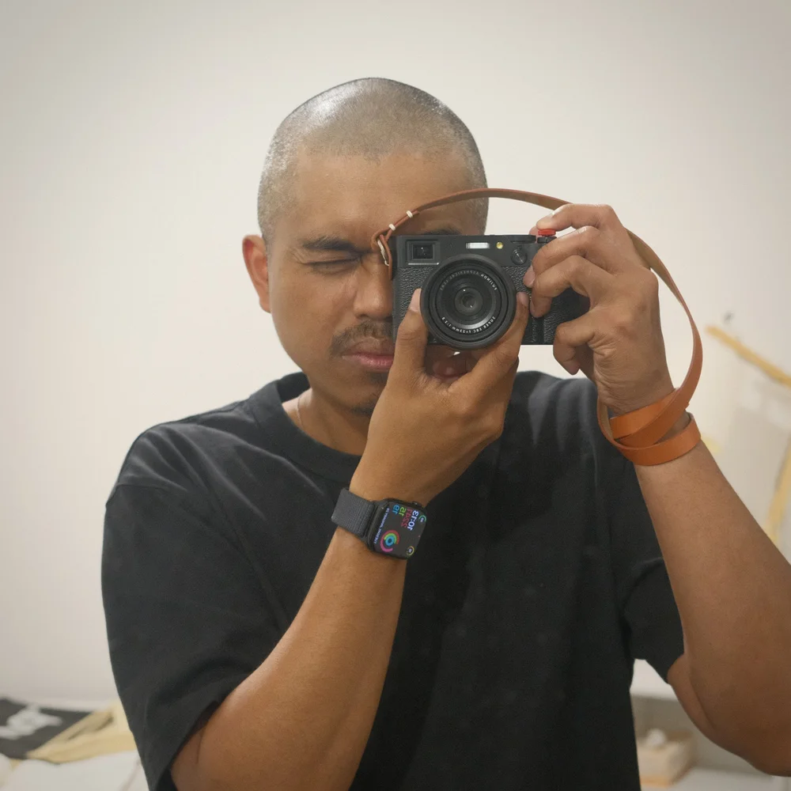

CARL CRUZ
I'm a street photographer based in Melbourne. Photography is a hobby that keeps me grounded, curious, and constantly observing the world around me.
I mainly shoot with Fujifilm cameras, drawn to their colour science, compact form, and the tactile feel that makes shooting enjoyable. My work is rooted in the everyday, focusing on light, texture, and fleeting moments on the street.
This space is where I share my photos, personal film recipes, and the occasional musing on gear or process. Thanks for stopping by.
